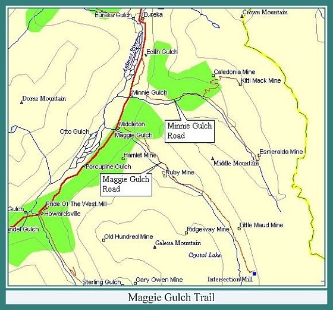
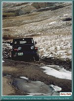
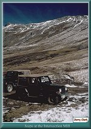
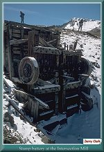
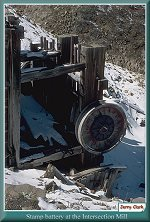

Contributed by Jerry Clark

| The Maggie Gulch side trip is for 4 wheel drive vehicles only. The trip begins about 1.5 miles above Howardsville off County Road 110 at the public restrooms. Some folks in the region claim the wildflowers in the Maggie Gulch basin during July are more beautiful than the wildflowers in Yankee Boy Basin above Ouray. |
| The trail takes a sharp left and goes up the side of Middle Mountain. After the switchback, Maggie Creek can be seen at the bottom of the gulch. At a junction in the road, stay to the left and continue up the gulch. Galena Mountain at 13,278 feet is on the right, Middle Mountain at 12,964 feet is on the left. |
| Continuing up the road, the path of the Ridgeway tram can be seen descending from the Ridgeway Mine which was first worked in 1896. The mine was located in the basin the falls descend from. |
| You arrive in the upper basin of Maggie Gulch after driving through a steep and narrow section of road. The road to the left is private. On the left, the remains of the Dewey and Gold Nugget Mines can be seen. |
| By this point you are above timberline. A number of prospect holes can be seen across the creek. Further up the road and off to the left is the site of the Little Maud Mine. |
| Past the Little Maud Mine is a fork. The road to the right is washed out and should not be attempted. The mine structures visible across the creek are remains of modern mining activity. The metal building is part of the Empire Mine. Continue up the road to the left to reach the Intersection Mill and Mine. |
| The road leading to the Intersection Mill and Mine can be difficult in wet conditions. |
| The photos show the snow on the ground on 26 September 1996. About 200 yards from the mill the road was over a foot deep in mud for a distance of 60 yards. It required a good look to determine the best line to take before proceeding. Under no circumstances leave the trail! At best you scar the alpine tundra for about 15 years. At worst, you scar the tundra and get your vehicle totally stuck. |
| Before reaching the mill, a foot trail goes off to the left which leads to the Continental Divide at the back of the gulch and the drainage of the Rio Grande River. |
| The Intersection Mill and Mine is located at the end of the road. It was built in the late 1890's by Silverton interests. The Intersection Mill is one of the few mills in the San Juans with it's stamps still standing. The boiler, winches and sheaves from the minehead can be seen. Take extreme care immediately above the mill, the mine shaft is exposed! Keep a respectful distance from the open shaft. |
| Behind the Intersection mill is the Continental Divide with Canby Mountain at 13,478 feet ahead of you. Return to CR #110 by retracing the route up. |
|
 |
Miles Lumbard coming out
of the mud at the Intersection Mill Head of Maggie Gulch Basin 9/96 (162k) |

|
 |
Jeeps at the Intersection Mill
9/96 (131k) |

|
 |
Stamp battery at the
Intersection Mill (115k) |

|
 |
Stamp battery at the
Intersection Mill (137k) |


|
The Narrow Gauge Circle is written, maintained,and hosted by: Mark L. Evans Send Comments to:Mark L. Evans All original materials, text, and digital images Copyright © 1996-2017 Mark L. Evans. All rights reserved. Imitation is said to be the "sincerest" form of flattery.....Please don't flatter us without permission. |